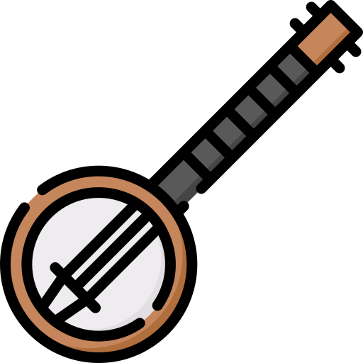
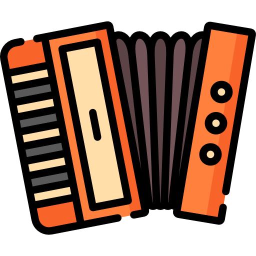
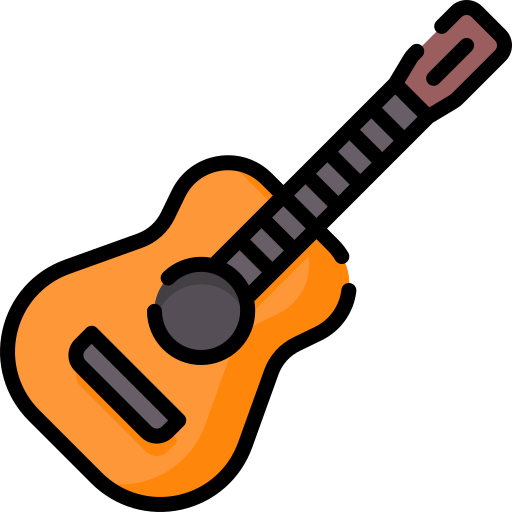
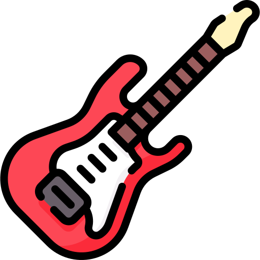

Part 0: Introduction
*Thought Process behind song*
*Recording Process and ehtics of appropriation*
*Thought Process behind song*
*Recording Process and ehtics of appropriation*


Part 1: Where Do I Come From?
The accordion I am playing was left to me by my Grandfather, a role model and major inspiration for me as a musician.
The accordion represents a connection to my heritage and the transmission of knowledge across generations through story and song.
The accordion also funcitons as a representation of the educators in my family.
The accordion I am playing was left to me by my Grandfather, a role model and major inspiration for me as a musician.
The accordion represents a connection to my heritage and the transmission of knowledge across generations through story and song.
The accordion also funcitons as a representation of the educators in my family.


Part 2: Who Am I?
The acoustic guitar represents my journey of self-reflection and the exploration of my identity as a teacher.
The acoustic guitar represents my journey of self-reflection and the exploration of my identity as a teacher.

Part 3.1: Why am I here?
*Indigenous Ways of Being and Knowing*
*Land-Based ecological justice*
*Indigenous Ways of Being and Knowing*
*Land-Based ecological justice*


Part 3.2: Why am I here?
*Inclusive Education*
*Biases in relation to diversity in schools*
*Inclusive Education*
*Biases in relation to diversity in schools*


Part 4: Where Am I Going?
*Write text about ethicallity in teaching*
test test test test trest test test test test test tset test tes
ghdfgh gfdgh gdfgh
*Write text about ethicallity in teaching*
test test test test trest test test test test test tset test tes
ghdfgh gfdgh gdfgh